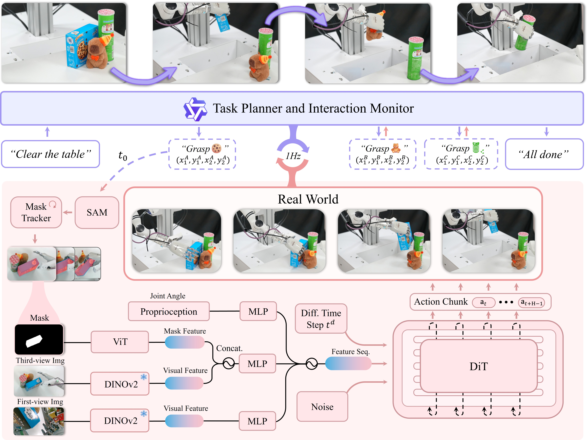
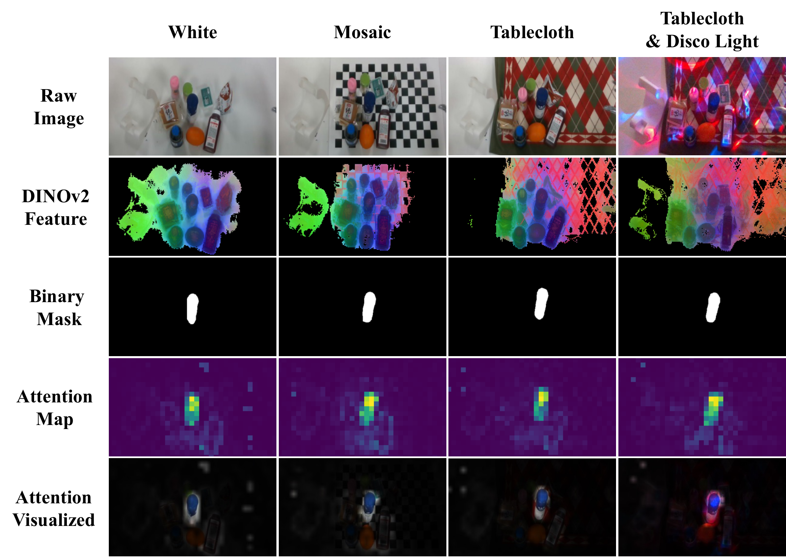
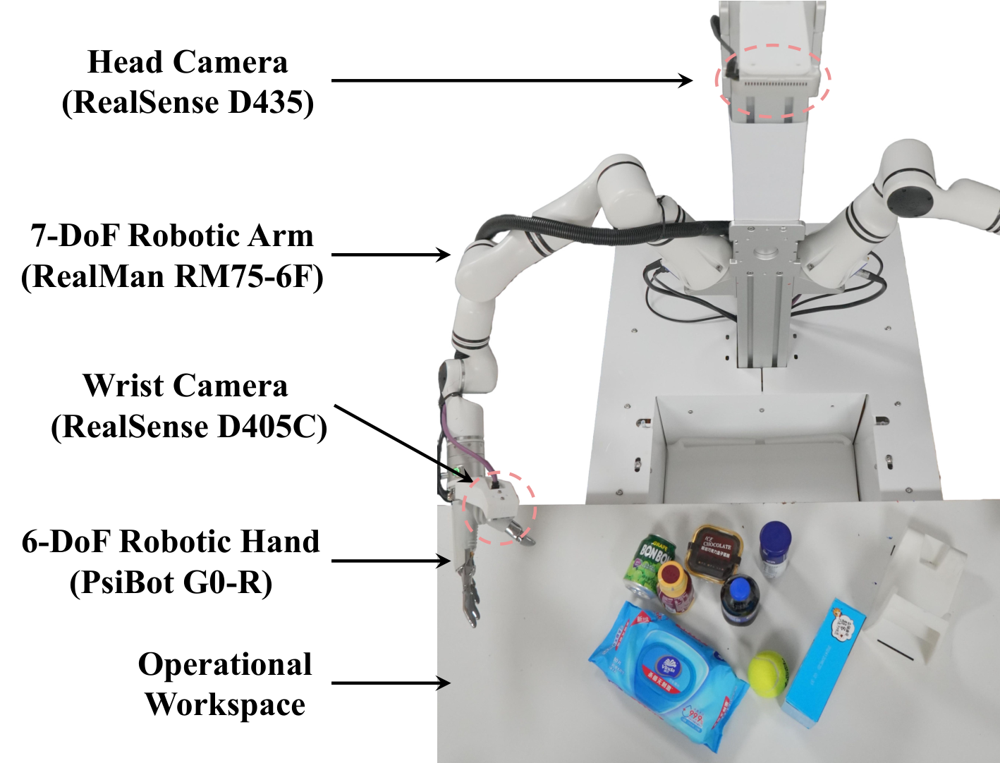
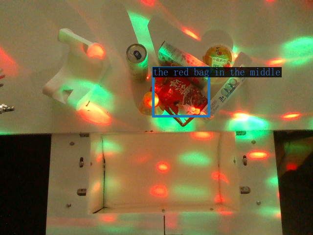
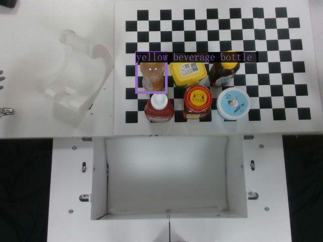
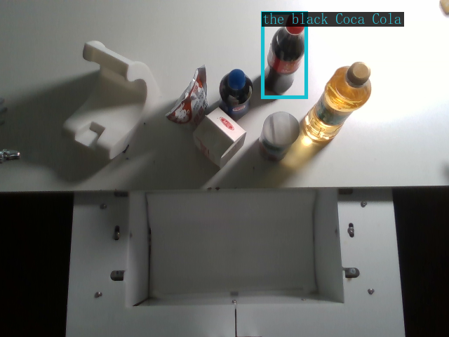
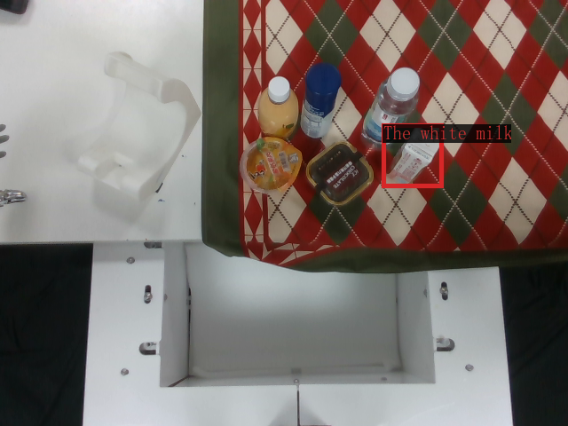
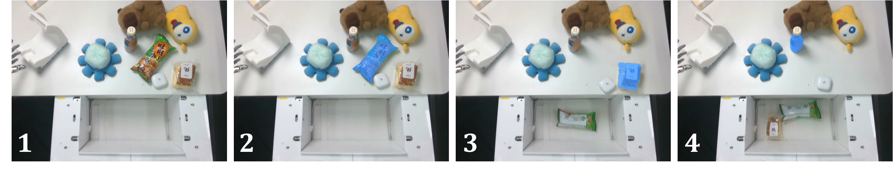

DexGraspVLA: A Vision-Language-Action Framework Towards General Dexterous Grasping
面向 junior PhD 组会准备的中文精读报告：围绕 WAM / 灵巧手 VLA 复现路线，拆解动机、方法、实验、图表证据和复现风险。
1. 论文速览
一句话总结：提出分层 VLA 框架：上层 VLM 负责语言目标分解和目标定位，下层 diffusion controller 负责灵巧手闭环抓取。
DexGraspVLA 将开放词汇灵巧抓取拆成两个频率不同的层级：低频 VLM 负责理解自由语言指令、选择目标并检查任务是否完成；高频 diffusion controller 负责真正的多指接近、闭合与抬起。它的关键设计不是让大模型直接输出关节动作，而是用 SAM mask 与冻结的 DINOv2 特征把复杂视觉场景变成低层控制器更容易泛化的条件。对于首次复现灵巧手 VLA，它的模块边界清晰、问题定义集中，是较好的起点。
分层 VLA 复现优先级最高：上层 VLM/SAM/DINOv2 负责语义与目标表征，下层 diffusion controller 只学习可执行动作。
| 阅读项 | 内容 |
| 关键词 | DexGraspVLA; 分层 VLA; 灵巧抓取; diffusion policy; VLM planner; 泛化抓取 |
| 论文类型 | 灵巧手 VLA / 分层 VLA |
| 复现价值 | 最适合先复现 |
| 开源情况 | 代码开源 |

读图要点：这张图主要说明系统模块与信息流，读的时候要把输入、动作表示、模型主体和输出接口分开标注，避免只记住一个模型名字。

读图要点：这张图主要说明系统模块与信息流，读的时候要把输入、动作表示、模型主体和输出接口分开标注，避免只记住一个模型名字。
2. 研究问题与动机
现有灵巧抓取方法往往在单物体、固定背景或有限类别中训练，换到杂乱桌面、未见物体和自由语言指令后容易失效。直接微调通用 VLA 又需要大量覆盖视觉变化的机器人数据。DexGraspVLA 的动机是保留预训练视觉语言模型的语义与视觉泛化能力，只让低层策略学习接触丰富的抓取动作，从而用有限真实示范覆盖更大的物体、背景和光照分布。
灵巧手与普通夹爪最大的区别在于动作空间、接触模式和任务反馈都更复杂。VLA 或 world model 如果只解决语言理解，而没有解决高维动作表示和接触动态，就很难真正迁移到灵巧操作。
| 痛点 | 为什么重要 |
| 高自由度动作 | 手指、腕部、物体接触共同决定成败，不能只预测末端位姿。 |
| 数据稀缺 | 真实灵巧手示范昂贵，且跨手型难复用。 |
| 跨场景泛化 | 光照、背景、物体形状和材质变化会破坏视觉策略。 |
| 复现成本 | 硬件、数据格式、控制频率和仿真环境都会成为实际门槛。 |
4. 方法详解
高层 planner 接收自由指令与场景图像，依次执行子任务提议、目标 bounding box 预测、抓取结果识别与任务完成检查。目标框交给 SAM 生成 mask，并通过 tracker 在执行过程中维持目标身份。低层控制器融合第三视角 RGB、目标 mask、腕部第一视角图像与 proprioception；冻结 DINOv2 编码 RGB，ViT 编码 mask，DiT action head 通过去噪生成未来 action chunk。长程任务由高层逐物体调用低层控制器完成。
4.1 模块化阅读图
- 高层 VLM planner 执行 instruction proposal、目标框预测、grasp outcome recognition 和 task completion check。
- SAM 将 VLM 的 bbox 转为目标 mask，DINOv2 提供更稳定的视觉特征，降低低层策略对像素背景的过拟合。
- 低层 controller 使用 diffusion/DiT action head 生成 action chunk，而不是一步一步贪心输出动作。
- 整套系统的关键假设是：foundation model 负责跨场景表征，机器人动作仍由专门收集的低层示范数据学习。
4.2 关键表示与接口
| 接口 | 应检查的问题 |
| 视觉输入 | 使用原始图像、mask、DINO/ViT 特征，还是视频 latent？ |
| 语言输入 | 是高层 planner、任务条件，还是直接进入 action head？ |
| 动作表示 | 关节角、末端位姿、手部 keypoint、latent action，还是 action chunk？ |
| 训练目标 | behavior cloning、diffusion denoising、world-model prediction、contrastive objective 还是混合损失？ |
| 部署方式 | 端到端策略、分层控制、MPC/CEM 规划，还是离线评估？ |

读图要点：这张图支撑数据/任务覆盖范围的 claim，需要关注物体、场景、手型和评估 split 是否足以支撑泛化结论。

读图要点：这张图说明真实系统或硬件部署，读的时候要关注传感器、控制频率、手型和安全约束。

读图要点：这张图是定性证据，适合用来解释模型行为和失败模式，但不能替代大规模定量指标。
5. 实验与结果
核心实验不是单个 seen-object 成功率，而是 360 个未见物体、6 个未见背景和 3 种未见光照构成的大规模组合测试。论文报告 Ours@1 约 90.8%，允许三次尝试时约 96.9%；长程语言任务还分别统计 instruction、bbox、controller 与 completion check 的错误。冻结 DINOv2 的消融优于重新训练的小视觉 backbone；nonprehensile 场景进一步测试先推至桌边再抓取的复合动作。
5.1 读实验时先看什么
- 重点看 unseen objects/backgrounds/lights 下的成功率，而不是 seen object 上的单点结果。
- 长程任务要拆开看 planner、bbox、controller、completion check 的误差传播。
- 消融里最重要的是 frozen foundation features 与从头训练视觉 backbone 的差异。
- nonprehensile grasping 可视为方法迁移能力测试：动作拓扑从直接抓取变成先推后抓。
5.2 图表证据链
| 证据 | 支持的 claim | 仍需警惕 |
| 系统/架构图 | 说明模块职责和信息流。 | 架构清楚不等于每个模块都有效。 |
| 主结果表 | 证明任务成功率或预测质量。 | 需要看任务规模和测试分布。 |
| 消融实验 | 定位收益来自表示、数据还是模型。 | 消融是否公平、是否覆盖关键替代方案。 |
| 定性图 | 展示真实/仿真交互细节。 | 好看的图不能替代大规模统计。 |
| 附录细节 | 给出训练、数据、超参和失败案例。 | 很多复现风险藏在附录。 |

读图要点：这张图是定性证据，适合用来解释模型行为和失败模式，但不能替代大规模定量指标。

读图要点：这张图是定性证据，适合用来解释模型行为和失败模式，但不能替代大规模定量指标。

读图要点：这张图是定性证据，适合用来解释模型行为和失败模式，但不能替代大规模定量指标。

读图要点：这张图支撑数据/任务覆盖范围的 claim，需要关注物体、场景、手型和评估 split 是否足以支撑泛化结论。
6. 复现要点
优先复现单物体抓取，再接入高层 planner。需要多指手与机械臂、第三视角和腕部相机、20Hz 左右控制链路、遥操作示范、SAM/DINOv2、可进行视觉 grounding 的 VLM，以及 diffusion action-chunk 训练代码。最容易出问题的是 mask 跟踪、相机与 proprioception 时间对齐、不同硬件动作维度，以及 VLM prompt 与原论文不一致导致的目标框错误。
6.1 复现风险清单
- 需要真实灵巧手硬件和多视角/腕部相机，低层数据采集成本高。
- VLM grounding、SAM mask、DINOv2 feature、diffusion controller 任一环节失败都会级联。
- 如果没有论文同款硬件，动作维度和控制接口需要重新适配。
| 维度 | 检查项 |
| 代码 | 仓库是否包含训练、评估、数据预处理和模型权重加载。 |
| 数据 | 是否公开原始数据、标注、过滤脚本和 split。 |
| 模型 | 是否给出 backbone、tokenizer、action head、world model 的尺寸与权重。 |
| 训练 | batch size、学习率、epoch、GPU、随机种子和日志是否足够。 |
| 硬件 | 手型、相机、控制频率和安全策略是否能匹配。 |
| 评估 | 成功率定义、重试次数、任务分布和失败统计是否清楚。 |
7. 分析、局限与边界
模块化结构使错误来源可定位，但也产生明显级联风险：VLM 选错物体、SAM 分错 mask 或 tracker 丢失目标，低层控制再强也无法恢复。实验主要围绕桌面抓取、清理和先推后抓，尚未证明工具使用、双手协作、透明/强反光物体或精细力控能力。90% 以上成功率依赖特定硬件、重试策略和测试协议，不能直接外推到任意灵巧手。
对你的课题而言，最重要的不是把所有论文都当成可直接复现的系统，而是判断它们在链路中的位置：有的是数据/动作表示，有的是世界模型，有的是 VLA 控制器，有的是高自由度真实系统。只有把位置分清，才知道该复现哪一段、创新该放在哪里。
8. 组会问答准备
Q1: 这篇论文的核心 novelty 是什么？
提出分层 VLA 框架：上层 VLM 负责语言目标分解和目标定位，下层 diffusion controller 负责灵巧手闭环抓取。
Q2: 它最适合放在你的哪条研究线上？
分层 VLA 复现优先级最高：上层 VLM/SAM/DINOv2 负责语义与目标表征，下层 diffusion controller 只学习可执行动作。
Q3: 哪个实验最有说服力？
优先看主结果表与关键消融：主结果回答“能不能做”，消融回答“为什么能做”。如果二者缺一，论文 claim 的可信度都要打折。
Q4: 最大复现风险是什么？
优先检查数据、动作接口和硬件环境。对灵巧手论文来说，代码开源不等于可复现，真正的难点常常在遥操作数据格式、相机标定、控制频率和安全策略。
Q5: 下一步可以怎么用？
适合作为灵巧手 VLA 复现起点。建议先跑通 mask-conditioned 低层 controller，再替换 VLM 或视觉特征做创新；不要一开始就复现完整长程系统。与 DexVLA 比，它更专注灵巧抓取；与 UniHM 比，它的高低层职责更清楚。